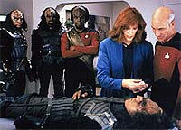
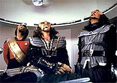
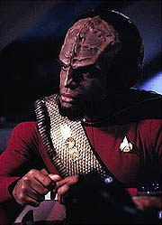
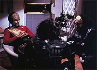

|
MANCHETE
DO EPISDIO
Worf
finalmente deixa de ser pea
decorativa da ponte da Enterprise
Episdio
anterior | Prximo
episdio
Sinopse:
Data Estelar: 41503.7.
A Enterprise resgata de um cargueiro Talariano um trio de Klingons.
Eles dizem ter sido atacados por uma nave Ferengi, mas na verdade so
fugitivos tentando reconstruir os dias de passado de luta de seu imprio.
Eles sequestraram a nave de carga e destruram o cruzador Klingon
enviado para captur-los.
 Sem
saber das intenes reais dos Klingons, Picard instrui o tenente
Worf a oferecer todas as comodidades aos visitantes, incluindo um
tour pena nave. Durante a visita, os fugitivos tentam cooptar Worf
em prol de sua causa. Enquanto isso, uma nave Klingon se aproxima e
seu capito revela a Picard quem so seus "convidados",
exigindo extradio imediata.
Antes que Picard possa entreg-los s autoridades, um deles
consegue fugir, e o outro morto. O renegado sobrevivente, Korris,
assume o controle da engenharia e ameaa destruir a Enterprise.
 Tentando
salvar sua nave e tripulao, Worf resolve conversar com seu
compatriota. Enfrentanto a morte certa, o fugitivo tenta mais uma
vez convencer Worf a juntar-se a ele, fugindo com a seo de
batalha da Enterprise. Dividido entre sua nova vida e seus instintos
guerreiros, Worf chega concluso de que o maior desafio de um
guerreiro interior. Sem outra opo, Worf mata o renegado.
Impressionado com as habilidades de Worf, o capito da nave Klingon
oferece a ele uma posio sob seu comando. Aps polidamente dizer
ao Klingon que pensar a respeito, ele garante a Picard que no
tem planos de deixar a Enterprise.
Comentrios:
Finalmente descobrimos o que Worf est fazendo na ponte da
Enterprise! Essa a sensao que fica aps assistirmos a "Heart
of Glory", um dos melhores episdios do primeiro ano. A
premissa do episdio justamente essa: provar que colocar Worf a
bordo da nave, revelia do prprio Gene Roddenberry, foi uma boa.
E ao final do episdio, percebemos que realmente verdade. E essa
sensao sintetizada na frase final de Picard a Worf: "A
ponte no seria a mesma sem o senhor". No dava para dar dica
maior sobre a real inteno do episdio.
Em termos de enredo, ele tem vrios elementos que levam o episdio
ao sucesso. Primeiro, temos uma chance de ver que a paz entre a
Federao e o Imprio Klingon no to estvel e segura como
a presena de Worf na Enterprise sugeria. Segundo, podemos ver
Klingons " moda antiga", odiveis, sedentos de batalha,
guerreiros e hostis aos humanos.
 Tambm
comeamos a ter insights sobre a cultura Klingon, algo que viraria
uma das coqueluches do seriado ao longo de suas sete temporadas.
Isso sem falar no mais importante: um dos primeiros episdios
(ainda que sutilmente) voltado a um personagem.
A verdadeira meta aqui descobrir onde est a lealdade de Worf
--com seu sangue guerreiro ou com os princpios da Frota. O que ele
descobre no final (de forma conveniente, admito) que seus dois
lados no so contraditrios --a verdadeira sagrao de um
guerreiro enfrentar a batalha que Worf estava enfrentando, ao
decidir de que lado ele deveria ficar.
Ao manter o controle e ressaltar a seu colega Korris a importncia
de honra e lealdade para um guerreiro, Worf estava mais que
solucionando o episdio, mas ditando a tnica da "nova"
cultura Klingon do sculo 24 --em vez dos meros viles sem piedade
da Srie Clssica, os Klingons passavam a ser guerreiros com um
forte senso de honra, conceito central de sua cultura. Uma mudana
e tanto.
bem verdade que aqui Worf ainda est muito humanizado, fruto do
carter indito de seu personagem. Ao longo das prximas
temporadas, o Klingon acabaria por mostrar mais sua natureza Klingon.
Mesmo assim, "Heart of Glory" continua sendo um
marco, principalmente para um personagem que estava at agora
servindo como pea decorativa na ponte.
 Tecnicamente,
o episdio mistura bons e maus momentos. Visualmente interessantes
so os cenrios a bordo do cargueiro Talariano e o experimento que
permite ponte monitorar a viso de Geordi.
Um ponto negativo vai para o disruptor improvisado dos Klingons.
Depois de montada, fica claro para o telespectador que aquela arma
est toda frouxa e torta. S com muita boa vontade para achar que
aquilo atira alguma coisa...
Citaes:
Worf - "That is
not our way. Cowards take hostages. Klingons do not."
("Esse no o nosso jeito. Covardes fazem refns. Klingons
no.")
Worf - "My brother, it is you who does not see. You look for
battles in the wrong place. The true test of a warrior is not
without, it is within."
("Meu irmo, voc que no v. Voc procura por batalhas
no lugar errado. O verdadeiro teste de um guerreiro no est fora,
est dentro.")
K'Nera - "How did they die?"
("Como eles morreram?")
Worf - "They died well."
("Morreram bem.")
Trivia:
 Na opinio de Larry Nemecek, autor de vrios livros de Jornada e
editor da revista "Star Trek Communicator", este episdio
fez por Worf a mesma coisa que o episdio da Srie Clssica "The
Naked Time" fez para enriquecer o personagem Spock.
Na opinio de Larry Nemecek, autor de vrios livros de Jornada e
editor da revista "Star Trek Communicator", este episdio
fez por Worf a mesma coisa que o episdio da Srie Clssica "The
Naked Time" fez para enriquecer o personagem Spock.
Robert
Bauer, que aqui interpreta Kunivas, foi convidado a participar do
episdio por ser o bateirista da banda "The Watch", que
tinha na poca Michael Dorn (Worf) no baixo.
Acredite
se quiser, mas Vaughn Armstrong, o klingon Korris, o mesmo ator
que interpretou o romulano Telek, em "Eye
of the Needle", de Voyager.
Embora
o "klingons" do episdio tenha sido baseado no livro
"Dicionrio Klingon", de Marc Okrand, as frases escritas
por Maurice Hurley no fazem sentido algum se voc for tentar
traduzir.
As
cenas com a nave Klingon classe Ktinga foram sugadas diretamente
do primeiro filme de Jornada para cinema.
Ficha
tcnica:
Histria de Herbert Wright
& D.C. Fontana
Roteiro de Maurice Hurley
Direo de Rob Bowman
Exibido em 21/03/1988
Produo: 020
Elenco:
Patrick Stewart como
Jean-Luc Picard
Jonathan Frakes como William Thomas Riker
Brent Spiner como Data
LeVar Burton como Geordi La Forge
Michael Dorn como Worf
Gates McFadden como Beverly Crusher
Marina Sirtis como Deanna Troi
Wil Wheaton como Wesley Crusher
Denise Crosby como Natasha "Tasha" Yar
Elenco convidado:
Vaughn Armstrong
como comandante Korris
Charles H. Hyman como tenente Konmel
David Froman como comandante K'Nera
Robert Bauer como Kunivas
Brad Zerbst como enfermeiro
Dennis Madalone como Ramos
Episdio
anterior | Prximo
episdio
|